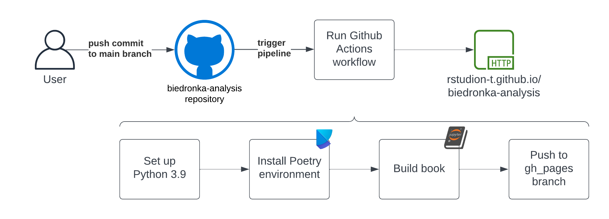

Wdrożenie raportu#
Projekt został opracowany w języku programowania Python z wykorzystaniem biblioteki Jupyter do tworzenia notebooków.
Raport został opublikowany w oparciu o narzędzie Jupyter book oraz Github Pages.
Diagram wdrożenia#

Projekt wykorzystuje workflow Github Actions do automatyzacji procesu wdrożenia. Przy każdej zmianie w repozytorium na gałęzi main uruchamiany jest proces budowania raportu, który następnie jest publikowany na gałęzi gh-pages i dostępny pod adresem https://rstudion-t.github.io/.
Do zarządzania zależnościami wykorzystano narzędzie Poetry.
Workflow został zdefiniowany w pliku .github/workflows/deploy.yml:
name: deploy-book
on:
push:
branches:
- main
permissions:
contents: write
pages: write
id-token: write
jobs:
deploy-book:
runs-on: ubuntu-latest
steps:
- uses: actions/checkout@v2
- name: Set up Python 3.9
uses: actions/setup-python@v2
with:
python-version: 3.9
- name: Install dependencies
run: |
python -m pip install --upgrade pip
pip install poetry==1.7.1
poetry install --no-root
- name: Build the book
run: |
poetry run jupyter-book build --path-output ./ rstudion-t/
- name: GitHub Pages action
uses: peaceiris/actions-gh-pages@v3.6.1
with:
github_token: ${{ secrets.GITHUB_TOKEN }}
publish_dir: ./_build/html
Note
Dla domyślnego darmowego planu Github Team, Github Pages dostępne jest tylko dla repozytoriów publicznych.